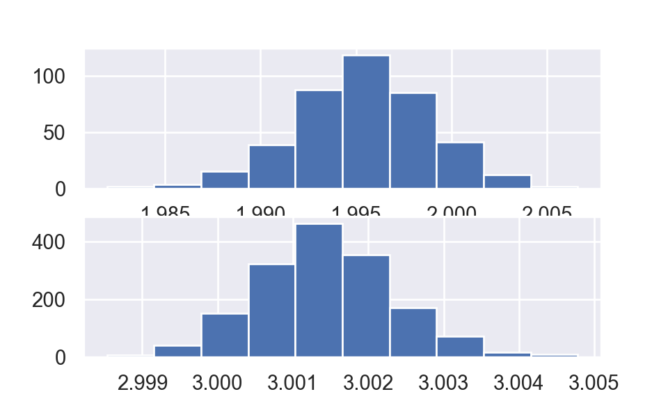

import numpy as np
import pandas as pd
import matplotlib.pyplot as plt
import statsmodels.api as sm
import arspy.ars
np.random.seed(530)
y = np.zeros(1000)
x0 = np.ones(1000)
x1 = np.zeros(1000)
for i in range(1000):
x1[i] = np.random.normal(loc = 0, scale = 1, size = 1)
eta = 2 + x1[i] * 3
y[i] = np.random.poisson(lam = np.exp(eta), size = 1)
y = np.round(y,0)
X = np.column_stack([x0,x1])
model = sm.Poisson(y,X)
model.fit().summary()
Poisson Regression Results
| Dep. Variable: | y | No. Observations: | 1000 |
| Model: | Poisson | Df Residuals: | 998 |
| Method: | MLE | Df Model: | 1 |
| Date: | Sat, 25 Feb 2023 | Pseudo R-squ.: | 0.9998 |
| Time: | 22:12:52 | Log-Likelihood: | -2452.5 |
| converged: | True | LL-Null: | -1.3517e+07 |
| Covariance Type: | nonrobust | LLR p-value: | 0.000 |
| coef | std err | z | P>|z| | [0.025 | 0.975] |
| const | 1.9957 | 0.003 | 596.766 | 0.000 | 1.989 | 2.002 |
| x1 | 3.0014 | 0.001 | 3508.839 | 0.000 | 3.000 | 3.003 |
df_output = pd.DataFrame({'x0':x0,'x1':x1,'y':y})
df_output.to_csv("data.csv",index = False)
def log1(beta0,beta1):
p1 = beta0 * np.sum(x0*y)
eta = x0 * beta0 + x1 * beta1
p2 = - np.sum(np.exp(eta))
p3 = -(beta0**2)/(2*1e6)
output = p1 + p2 + p3
return output
def log2(beta0,beta1):
p1 = beta1 * np.sum(x1*y)
eta = x0 * beta0 + x1 * beta1
p2 = - np.sum(np.exp(eta))
p3 = -(beta1**2)/(2*1e6)
output = p1 + p2 + p3
return output
beta0_output = np.zeros(6001)
beta1_output = np.zeros(6001)
beta1_output[0] = 3 #initial value of beta1
domain = (float(0), float("inf"))
def sample_beta0():
output = arspy.ars.adaptive_rejection_sampling(lambda x: log1(beta0=x,beta1=beta1_output[i]),\
a = 1, \
b = 10,\
domain = domain, \
n_samples = 1)[0]
return output
def sample_beta1():
output = arspy.ars.adaptive_rejection_sampling(lambda x: log2(beta0=beta0_output[i+1],beta1=x),\
a = 1,\
b = 10,\
domain = domain, \
n_samples = 1)[0]
return output
for i in range(6000):
beta0_output[i+1] = sample_beta0()
beta1_output[i+1] = sample_beta1()
## C:\Users\KEVIN_~1\ANACON~1\envs\env3\lib\site-packages\arspy\hull.py:204: RuntimeWarning: divide by zero encountered in log
## return -log(abs(m)) + log(abs(exp(m * r + b - M) - exp(m * l + b - M))) + M
fig,(ax1,ax2) = plt.subplots(nrows=2,ncols=1)
temp = ax1.hist(beta0_output[1000:6001],density=True)
temp = ax2.hist(beta1_output[1000:6001],density=True)
plt.show()

plt.close()
fig,(ax1,ax2) = plt.subplots(nrows=2,ncols=1)
temp = ax1.plot(np.arange(0,len(beta0_output[1000:6001]),1) + 1, beta0_output[1000:6001])
temp = ax2.plot(np.arange(0,len(beta1_output[1000:6001]),1) + 1, beta1_output[1000:6001])
plt.show()
plt.close()
References
Robert, Christian P., and George Casella. 2005. Monte Carlo Statistical Methods (Springer Texts in Statistics). Berlin, Heidelberg: Springer-Verlag.